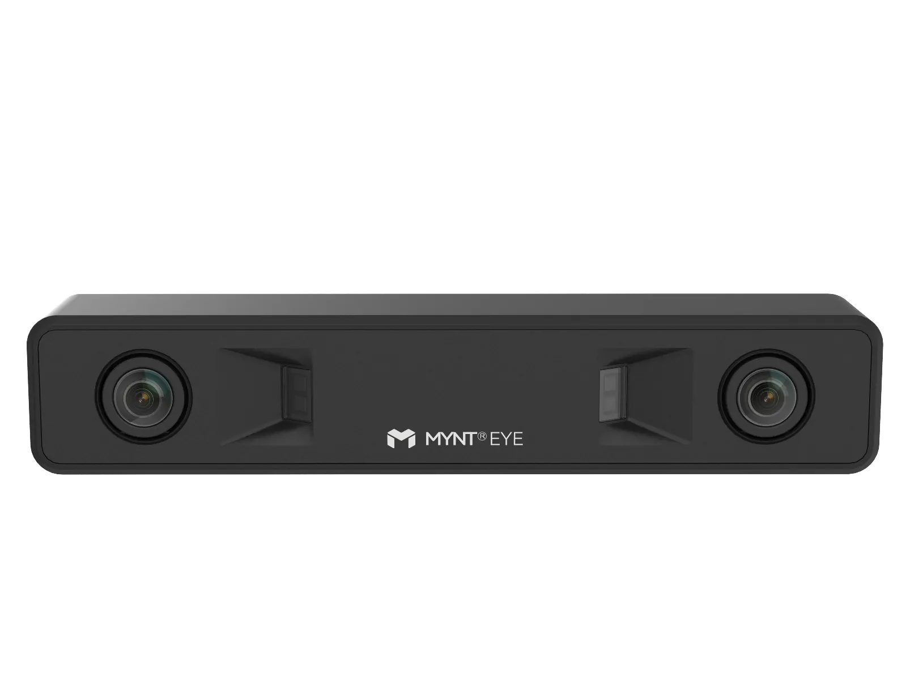

The Mynt Eye D stereo depth camera is a medium-range sensor capable of capturing an image
of the environment as well as depth information. The depth data can be displayed in a variety of
fashions, including as a point cloud, where each pixel has color and position. In that sense, it is
like a LIDAR array that also captures color.